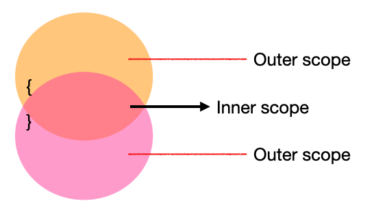
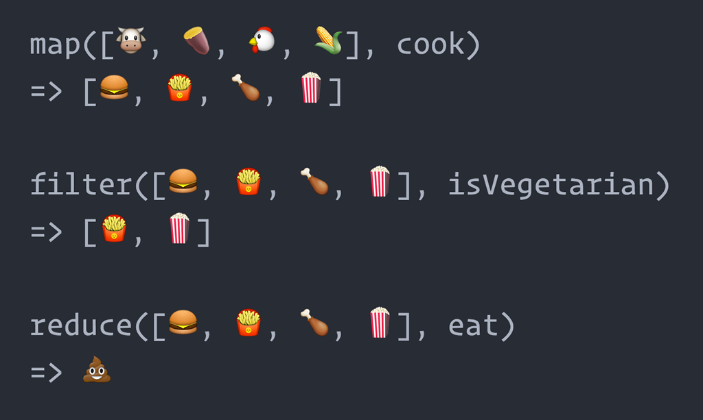

FE JavaScript
Lesson 9

🙉 lukas.orgovan@ness.com
🙊 erik.fecko@ness.com
JavaScript
Shadowing
Variable shadowing occurs when a variable of an inner scope is defined with the same name as a variable in the outer scope
JavaScript
Hoisting
Hoisting is JS behavior in which function or variable can be used before declaration.
- variable hoisting - only "var" is hoisted, not "let" or "const"
- function hoisting - simple "function xx(){}" is hoisted, not function expression "var xx = function(){}"
JavaScript
Array
JavaScript
Array - map, reduce, filter
JavaScript
Object, Class
Fun Fact - everything in JS is an object
JavaScript
Scope, Closure
The scope is a policy that manages the accessibility of variables.
ES5 (before 2015) had only Global Scope and Function Scope. ES6 added Block Scope by using "let" and "const".
JavaScript
Closure
A closure is the combination of a function bundled together (enclosed) with references to its surrounding state. Gives you access to an outer function’s scope from an inner function. In JavaScript, closures are created every time a function is created, at function creation time.